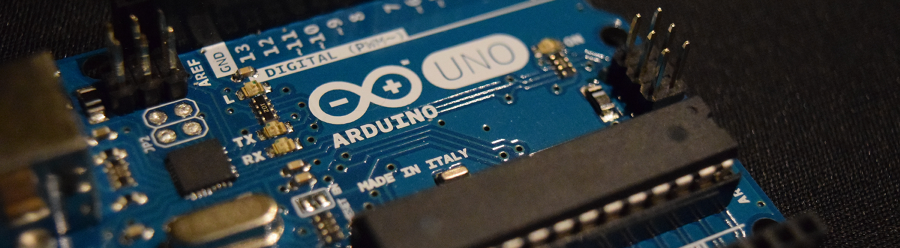

ArduinoUploaderCore
This is a fork of the ArduinoSketchUploader project created by Christophe Diericx. It has been altered to use .NET Standard and .NET 6 as well as adding support for the new Arduino Nano Bootloader.
This is a .NET library and a corresponding Windows command line utility that can be used to upload a compiled sketch (.HEX) directly to an Arduino board over USB. It talks to the boards bootloader over the serial (USB) connection, much like avrdude does (when invoked from the Arduino IDE, or from the command line).

Compatibility
The library has been tested with the following configurations:
| Arduino Model | MCU | Bootloader protocol |
|---|---|---|
| Leonardo | ATMega32U4 | AVR109 |
| Mega 1284 | ATMega1284 | STK500v1 |
| Mega 2560 | ATMega2560 | STK500v2 |
| Micro | ATMega32U4 | AVR109 |
| Nano (R2) | ATMega168 | STK500v1 |
| Nano (R3) | ATMega328P | STK500v1 |
| Uno (R3) | ATMega328P | STK500v1 |
If you have a need for this library to run on another Arduino model, feel free to open an issue on GitHub, it should be relatively straightforward to add support (for most).
Support for Mega 1284 was added by https://github.com/sijk, thanks!
How to use the command line application
Download the latest Windows binaries here (.zip file, version 3.2.0).
When running ArduinoSketchUploader.exe without arguments, the application will document its usage:
ArduinoSketchUploader 4.0.0.0
Copyright c Christophe Diericx 2016 - 2018
ERROR(S):
-f/--file required option is missing.
-m/--model required option is missing.
-f, --file Required. Path to the input file (in intel HEX format) which
is to be uploaded to the Arduino.
-p, --port Name of the COM port where the Arduino is attached (e.g.
'COM1', 'COM2', 'COM3'...).
-m, --model Required. Arduino model. Valid parameters are any of the
following: [Leonardo, Mega1284, Mega2560, Micro, NanoR2,
NanoR3, UnoR3].
--help Display this help screen.
A sample command line invocation (for a Mega2560 type Arduino attached to COM4):
ArduinoSketchUploader.exe --file=C:\MyHexFiles\myHexFile.hex --port=COM4 --model=Mega2560
If only a single COM port is in use on the system (used by the attached Arduino), one can omit the port:
ArduinoSketchUploader.exe --file=C:\MyHexFiles\myHexFile.hex --model=UnoR3
How to use the .NET library

Link the following nuget package in your project in order to use the ArduinoUploader: https://www.nuget.org/packages/ArduinoUploaderCore/
Alternatively, install the package using the nuget package manager console:
Install-Package ArduinoUploader
The following minimal snippet shows how to upload a .HEX file to an Arduino (UNO) board attached at COM port 3:
var uploader = new ArduinoSketchUploader(
new ArduinoSketchUploaderOptions()
{
FileName = @"C:\MyHexFiles\UnoHexFile.ino.hex",
PortName = "COM3",
ArduinoModel = ArduinoModel.UnoR3
});
uploader.UploadSketch();
As discussed above, one can try to auto-detect the COM port by omitting it.
Logging
In earlier versions of the library, it emitted log messages through a dependency on NLog. From an architectural point of view, it is suboptimal to be forcing a dependency on a particular logging framework from library code.
A simple IArduinoUploaderLogger interface is exposed from within the library. Implement this interface, and pass an instance into the ArduinoSketchUploader constructor if you want to consume log messages (in varying levels, from Info to Trace).
Implementing the interface using NLog consists of nothing more than this:
private class NLogArduinoUploaderLogger : IArduinoUploaderLogger
{
private static readonly Logger Logger = LogManager.GetLogger("ArduinoSketchUploader");
public void Error(string message, Exception exception)
{
Logger.Error(exception, message);
}
public void Warn(string message)
{
Logger.Warn(message);
}
public void Info(string message)
{
Logger.Info(message);
}
public void Debug(string message)
{
Logger.Debug(message);
}
public void Trace(string message)
{
Logger.Trace(message);
}
}